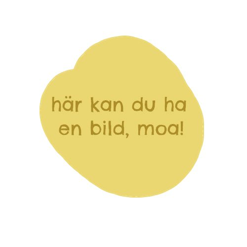
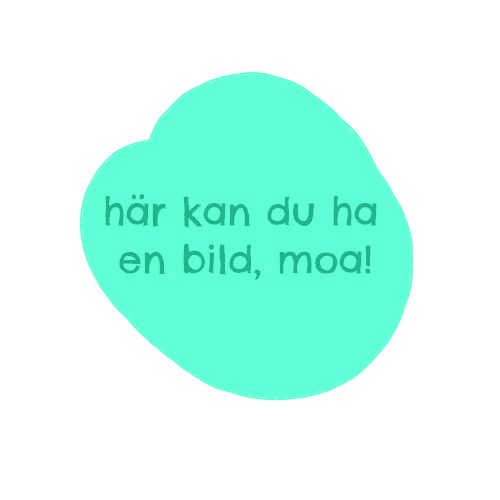
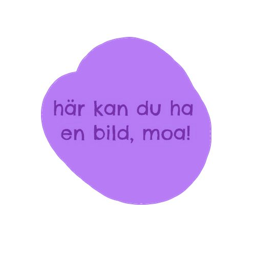
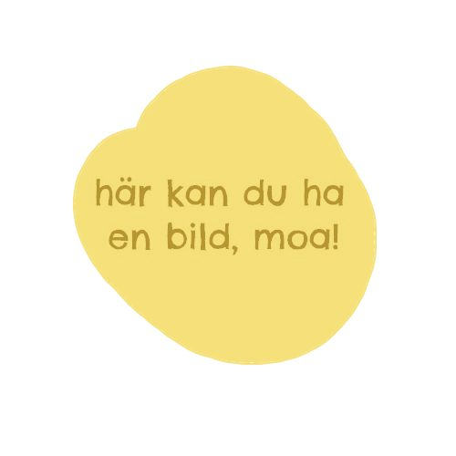

Våra Sjalar
Varje sjal är unik och tillverkas på beställning. Kontakta oss för tillgänglighet och specialbeställningar.
Skogsgrön
Ekologisk bomull med subtilt lövsmönster
1 200 kr
Solnedgång
Ull-bomulls blandning i varma solnedgångsfärger
1 500 kr

Transpride
Lätt linne i rosa, vitt och blått
1 400 kr

Solidaritetsjal
Röd, svart, vit och grön bomull
1 400 kr

Havsvågor
Blå och turkos ull med vågmönster
1 600 kr

Höstlöv
Varma färger i bomull med lövmotiv
1 300 kr